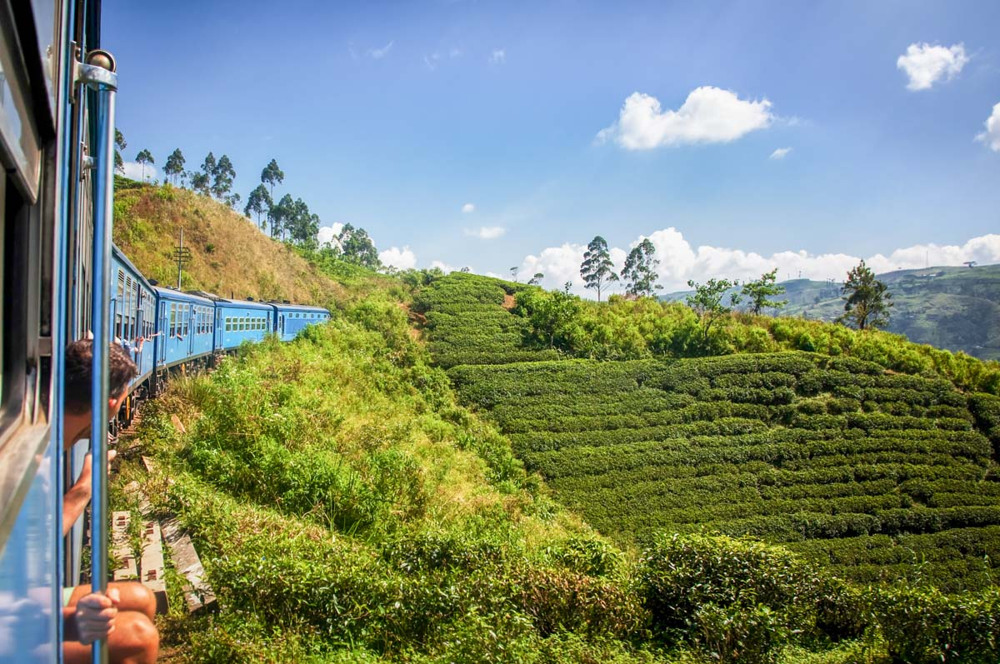

Misty Highlands & Iconic Rail Journeys

The misty highlands of Sri Lanka are famous for their lush tea estates and dramatic train journeys. The route from Kandy to Ella passes over historic bridges, through emerald valleys, and past cascading waterfalls.
What to experience
Ride the world-renowned Kandy-to-Ella train, stop at the Nine Arches Bridge, and take in the panoramic views from Horton Plains. This is a dream destination for landscape photographers and adventure travelers.
